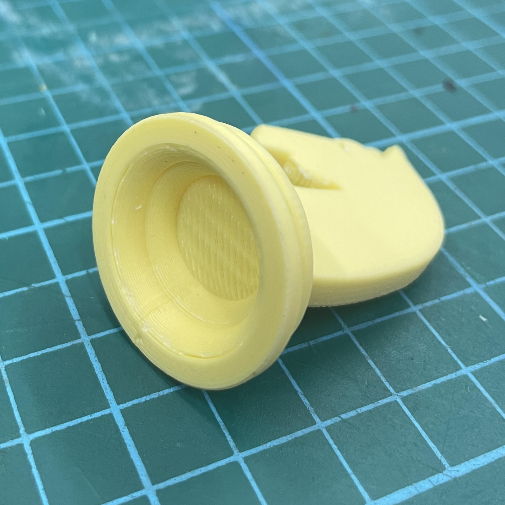

This page shows the documentation of the things I have learnt in term 1.
Computer Aided Design
Raster Graphics (GIMP)
| Image of Myself | Image of Seaside |
|---|
 |
| Final Image |
|---|
We were tasked to choose an image of ourselves, remove the background of the photo and substitute the background with a seaside scene. To do so, using GIMP I first used the 'Free Select Tool' to trace the image of myself. Then, I inverted the selection and removed the background by making it transparent. Afterwards, I added the image of the seaside by making it another layer. And the final product is an image of me looking like I am talking a walk by the seaside.
Vector Graphics (INKSCAPE)
| Image of Animal | Image of Animal Vector Art (Trace Bitmap) |
Image of Animal Vector Art (Trace manually) |
|---|
 |
We were tasked to choose an image of an animal. I chose a shark as seen above. Using Inkscape, I was able to generate a vector art of this shark image. I clicked on 'path', then 'Trace Bitmap'. After that, I clicked on 'Multicolour' and adjusted the scans until I was satisfied. The result is the vector image in the middle as seen above. The vector image on the right was created by tracing the original image and then filling the vector paths with strokes. After that, the paths were filled with colours using the fill tool.
3D Models
LEGO BRICK
This is a 2x4 stud lego brick. We followed a Youtube tutorial by Kevin Kennedy on how to make this in Fusion 360. After creating the main cuboid base, cylinders were created by sketching and extruding circles from the top plane of the cuboid. Then, the rectangular pattern function was used to create the 7 other cyliners on the top of the lego brick. Similar functions were used to create the tubes under the lego. The lego brick was hollowed out using the shell function.
EXTRUDES & PLANES
This was created by sketching a base of 10 squares that's in the shape of a triangle. Then the sketch was extruded to form 10 cubes. After that, a new sketch of 6 squares is done on the top plane of the body to form a smaller triangle. This is also extruded to form 6 cubes. These steps are repeated until the shape above is formed. Afterwards, the inside of the object was hollowed using the shell function.
NAME TAG
This is a name tag. It was created in by extruding and sketching on different planes. Extrusion was used to make the flat sketches 3-dimensional as well as create holes.
MUG
This is a mug. First, the symetrical half of the mug was sketched on a plane. Then, the revolve function was used to turn it into a 3-Dimensional object. After that, the 'U' shape of the handle was sketched on the same plane as the previous sketch. This sketch was then extruded on both sides to form the handle of the mug.
KNIGHT CHESS PIECE
| After designing the chess piece, I had it 3D printed in the FabLab. |
|---|
| Raw Print | After removing supports and brim | Hollow Base |
|---|
|  |
This is a knight chess piece. The base was created by sketching the symmetrical half of it onto a plane. The revolve function was used to create the 3-Dimensional base. The shell function was used to hollow out the base.
Then, an image of a horse's head was added to the first plane. A sketch was traced from this image before being extruded from both sides of the sketch to form a 3-dimensional knight chess piece. Just for extra details, I sketched a few shapes on the front face of the chess piece and extruded them with 'negative numbers' to cut those portions away. Doing this, I was able to create ears for the horse's head as well as the 'mowhawk'. Finally, the fillet tool was used on all edges to smooth the object out.
HEX NUT
This is a hex nut. To create this, we followed a tutorial by Kevin Kennedy. we created a polygon sketch and then ectruded it. Afterwards, we created the 'bevelled edge' by using the revolve function. Then we created a hole in the center of the shape and created threads within the hole, to complete the hex nut.
PERSONALISED IPHONE CASE
Rotate to see the back of the case!
This is one of my personal projects. I made an iPhone 12 pro case with the first 3 letters of my name 'rak', 'embossed' into the back of the case. I first created a sketch of the phone body with the corners curved by tracing an image of the phone. Then, I extruded it. I then made holes for the camera, and created a bevelled edge for it. Then I made the holes for the power button and the volume up and down buttons. Finally, I created holes for the speakers. Finally, I filleted all the holes and the outside edges of the case.